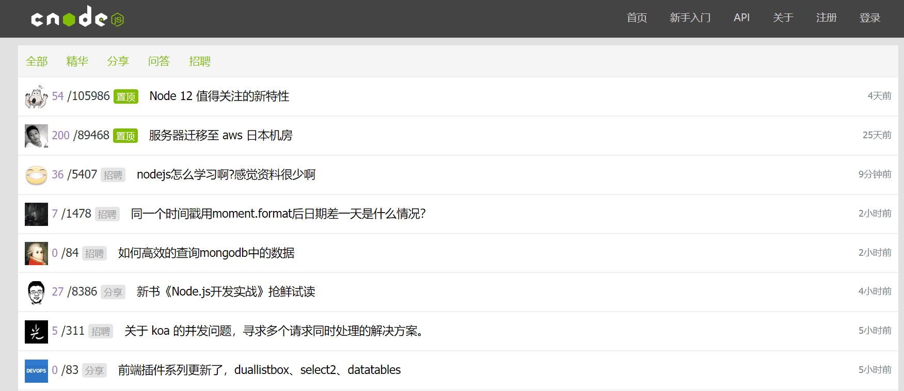
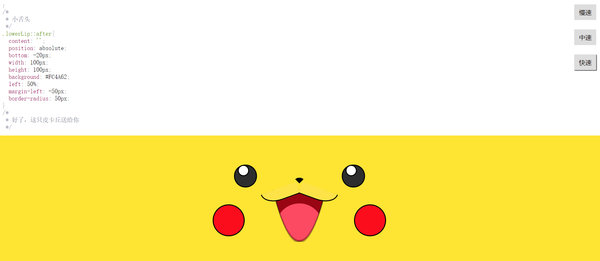
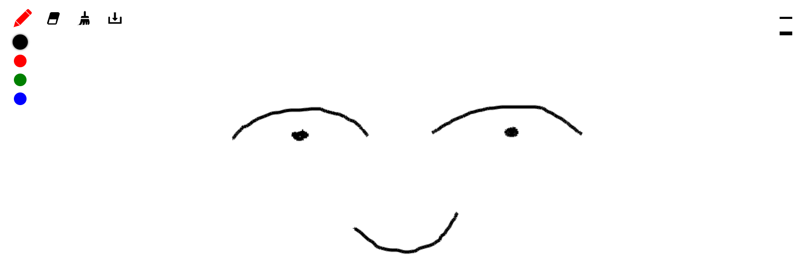

项目经历
基于Vue框架设计的CNode 社区
- 项目介绍：该项目使用 Vue 还原 CNode 官方社区，项目调用 CNode 官方社区提供的 API，以 Vue CLI 创建项目模版，使用 Axios 获取数据，使用 Vue Router 进行前端路由的切换及传参，使用 watch 监听路由的变化，Webpack 打包。
- 技术栈：Vue CLI/ Vue2/ Vue Router/ Axios/ ES6/ Npm/ SCSS
- 项目源码：gotgith.github.io/cnode-mask/#/
- 浏览链接：github.com/gotgith/cnode-mask
可爱皮卡丘
- 项目介绍：是一个使用纯原生 JS 开发的，动态显示 CSS 画一个皮卡丘过程的小作品。该作品主要思路是通过间隔计时器遍历预先设置在 preview 标签内代码，将其一个个显示在页面上，并在 style 标签上作同样处理，以使代码 CSS 生效。此外，实现了 CSS 高亮效果及调速功能。
- 项目源码：github.com/make-a-pikachu
- 浏览链接：github.io/make-a-pikachu
简易在线画板
- 项目介绍：是一个使用纯原生 JS 开发的，主要利用 HTML 5 的 Canvas API ，是我在学习原生 JS 及 Canvas 过程中开发的小工具。 其提供在 PC 及手机端在线画画、橡皮擦、画笔调色、画作删除等功能，并支持画作下载。
- 项目源码：github.com/gotgith/canvas-2019
- 浏览链接：gotgith.github.io/canvas
关于我
-
熟练 HTML、DIV + CSS 的页面布局，能根据设计图像素级完成页面制作
- 熟悉 HTML 5 及语义化，了解 Canvas动画制作，掌握 CSS3 动画、过渡效果等常用技术
-
熟悉原生 JavaScript，会使用 ES6+ 常用规范，了解TypeScript，了解jQuery 常用 API 及思想
-
熟悉 Vue 常用功能，理解如生命周期、组件、虚拟 DOM、数据响应式等概念，能够使用 Vue 全家桶开发项目
-
熟悉模块化、工程化开发流程，能够配置 Webpack
-
有移动端开发经验，会使用REM、vw/ vh、响应式 等技术制作适配手机设备的页面
-
了解 HTTP 相关知识，了解常见的 Web 性能优化方案
-
了解 Node.js，能够开发简单的后台服务器
-
了解 Python，具有相关的使用经验
-
熟练使用 VsCode、WebStorm、Sass、Git 等开发工具
个人经历
2017.03-2018.04在云南财经大学信管中心实习，主要工作是协助老师进行校园网站维护和开发，主要包括校园信息数据的上传、前端界面的实现等。
教育经历
2011.09-2015.07：北京化工大学北方学院
2016.09-2019.07：云南财经大学